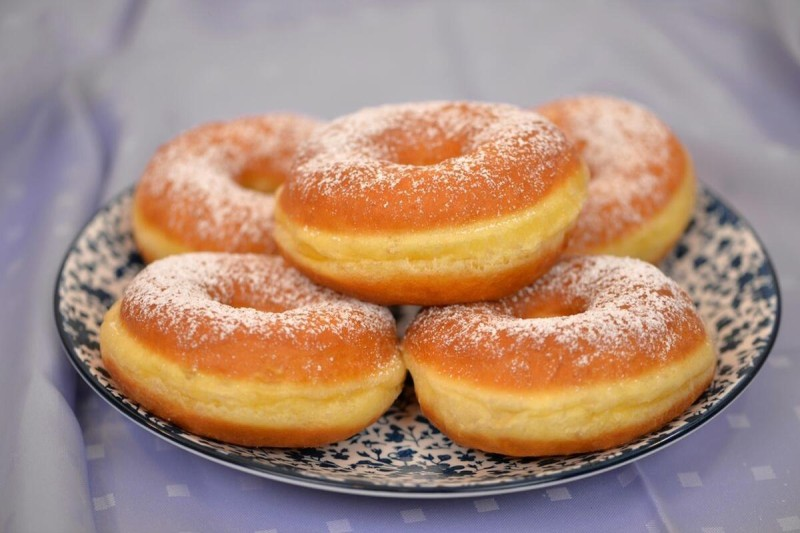
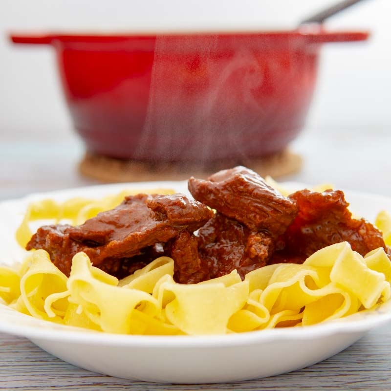
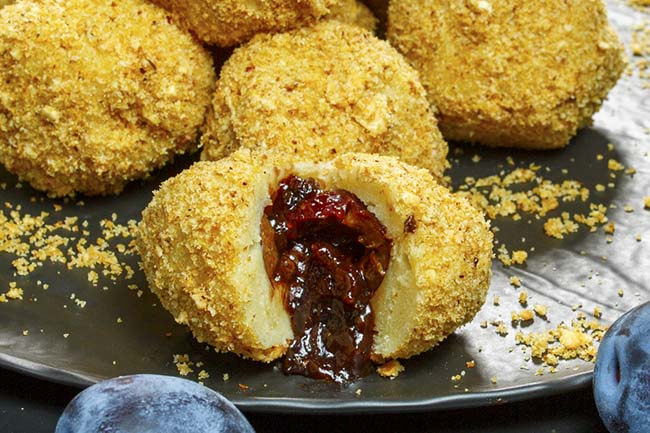

Restavracija Tavankut - Okusi Bunjevcev in vojvodinske ravnice
Dobrodošli v restavraciji Tavankut, kjer vas razvajamo z avtentičnimi jedmi Bunjevcev in bogato kulinarično dediščino okolice Subotice sredi Maribora.
Rezervirajte mizoO restavraciji
Naša restavracija nosi ime po znani bunjevaški vasi Tavankut, znani po bogati kulturni dediščini, sadovnjakih in vrhunski domači kuhinji.
Z ljubeznijo do tradicije pripravljamo jedi po starih receptih naših babic ter vam nudimo nepozabno kulinarično potovanje skozi Vojvodino.
Izpostavljene jedi

Bunjevački fanki
Tradicionalno cvrto kvasno testo, mehko in rahlo, postreženo z domačo marelično marmelado.

Goveji perkelt
Sočen goveji golaž z mletim sladkim in pekočim paprikam, postrežen z domačimi rezanci in skuto.

Slivovi gomboci
Klasični krompirjevi cmoki, polnjeni s sladkimi slivami in povaljani v praženih drobtinah.
NOVO